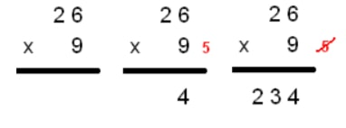
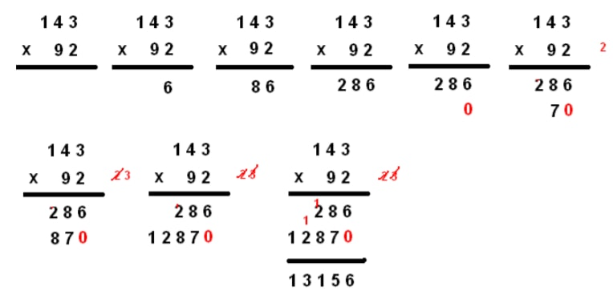

Pour bien résoudre une multiplication, il faut bien connaître les tables de multiplication.
Quand on a une multiplication à résoudre, il faut, en premier, la poser. Dans le cas de la multiplication
à 1 chiffre, on a un nombre qui est multiplié par un chiffre. Pour la poser, on écrit le nombre, puis le
chiffre en dessous, en prenant soin de bien aligner le chiffre avec celui des unités d’unités simples du
nombre. Ensuite, il ne reste plus qu’à écrire le « x » et à tracer un trait.
Pour calculer cette multiplication, on commence par le chiffre (celui en dessous du nombre) et on va le
multiplier par chaque chiffre (de la droite vers la gauche) du nombre, successivement. A chaque fois,
on écrira le résultat dans la même colonne que le chiffre du nombre qui a été multiplié. Attention, si le
résultat est supérieur ou égal à 10, on mettra, en retenue, tous les chiffres sauf celui des unités
d’unités simples.
Exemple :
Posons la multiplication suivante : 26 x 9. Pour la poser, on écrit d’abord 26, puis on aligne le 9 avec
le 6, en dessous du 26. On écrit ensuite, le « x » et on trace le trait.
Pour résoudre cette multiplication on va multiplier le 9 par tous les chiffres situés au dessus, toujours
de la droite vers la gauche. 9 x 6 = 54. Je pose 4 et je retiens 5. Je passe au chiffre suivant : 9 x 2 =
18. Mais il y a la retenue 5 donc on fait 18 + 5 = 23. J’écris le 23. Le résultat de 26 x 9 est donc 234.

Pour résoudre une multiplication à deux chiffres, on commence par la poser, en prenant soin de bien
aligner chaque chiffre des deux nombres, de la droite vers la gauche.
Ensuite, on multiplie, successivement, le chiffre situé à droite du deuxième nombre avec tous les
chiffres du premier nombre, de la droite vers la gauche. On marque à chaque fois le résultat dans la
même colonne que le chiffre (du premier nombre) multiplié et on pense aux retenues. Une fois que
cela est fait, on va à la ligne et on écris un zéro. Ensuite, il faut multiplier le deuxième chiffre (celui à
gauche) du deuxième nombre, successivement, par tous les chiffres du premier nombre. Le premier
résultat sera écris après le zéro et ainsi de suite. Enfin, on trace un trait et on additionne les deux
chiffres de chaque colonne pour obtenir le résultat de cette multiplication.
Exemple :
Posons la multiplication 143 x 92. Pour cela, on aligne le 2 avec le 3 et le 9 avec le 4. Passons
maintenant à la résolution : on commence par le 2 et on va le multiplier, successivement, par tous les
chiffres de 143. 2 x 3 = 6, je pose le 6 dans la même colonne que le 3. 2 x 4 = 8, je pose le 8 dans la
même colonne que le 4. 2 x 1 = 2, je pose le 2 dans la même colonne que le 1. Comme j’ai multiplié
tous les chiffres de 143 par 2, je vais à la ligne et je mets un zéro dans la colonne de droite. Ensuite je
multiplie 9 par tous les chiffres de 143. 9 x 3 = 27, je pose 7 et je retiens 2. 9 x 4 = 36, attention il ne
faut pas oublier la retenue : 36 + 2 = 38. Je pose 8 et je retiens 3. 9 x 1 = 9 et en ajoutant la retenue, 9
+ 3 = 12, je pose donc 12. Ensuite je trace un trait et j’additionne les chiffres colonne par colonne : 6 +
0 = 6, je pose 6. 8 + 7 = 15, je pose 5 et je retiens 1. 2 + 8 = 10 et avec la retenue on a 10 + 1 =11. Je
pose 1 et je retiens 1. 2 + 1 = 3, je pose 3. Enfin je pose 1 dans la dernière colonne. Le résultat de 143
x 92 est donc 13.156.

Le principe est le même que pour la multiplication à 2 chiffres.
Pour la multiplication à 3 chiffres, on ira deux fois à la ligne : la première fois on mettre un zéro
(comme pour la multiplication à 2 chiffres), et la deuxième fois on mettra 2 zéros.
Pour la multiplication à 4 chiffres, on ira trois fois à la ligne : la première fois on mettra un zéro, la
deuxième fois 2 zéros et la troisième fois 3 zéros.